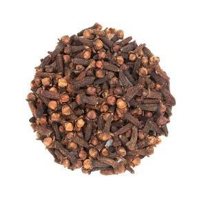
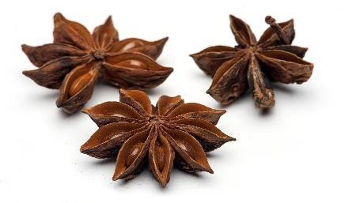
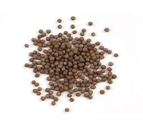
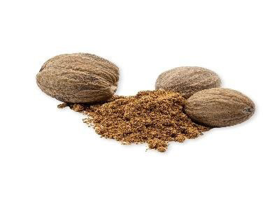
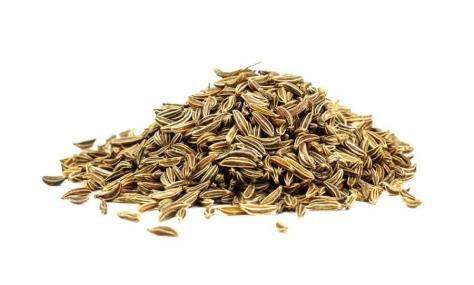

Food and Human Nutrition
Form Two
Type of spice
Description
Dishes

Cloves
Flower buds
Boiled
vegetable
rice,
biscuits and tea

Star anise
Dried seeds
Meat pilau and steamed jam pudding

Mustard
Dried seeds
Salad dressing

Nutmeg
Dried seeds
Egg custard, cheese sauce and milk puddings

Caraway seeds
Dried seeds
Cakes and bread